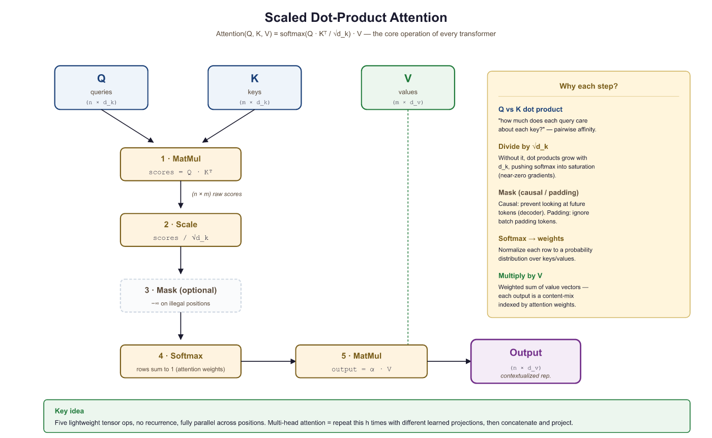

Why have one head when you can have eight, each looking at the sentence from a slightly different existential angle?
Attn, Multi-Headed AI Agent
From seq2seq attention to the Transformer's attention. In Section 2.2, we used attention to let a decoder peek at encoder states. The Transformer (Vaswani et al., 2017) takes this much further. It introduces the query/key/value (Q/K/V) abstraction, scales the dot products by √$d_{k}$ for numerical stability, runs multiple attention "heads" in parallel, and applies attention not just between encoder and decoder but also within a single sequence (self-attention). These building blocks are the heart of GPT, BERT, and every modern LLM. By the end of this section, you will have implemented multi-head self-attention from scratch and understood every piece of the mechanism that makes Transformers work.
Prerequisites
This section assumes you understand the intuitive attention mechanism from Section 2.2 (alignment scores, weighted context vectors). Matrix multiplication and basic linear algebra (from Section 0.2) are needed for the Q/K/V formulation. The multi-head attention mechanism developed here is the core component of the Transformer architecture detailed in Section 3.1; for optimization-focused variants like grouped-query attention, see Section 3.2.
2.3.1 The Query, Key, Value Abstraction
During training, the model at each position sees the true previous token from the ground-truth sequence (teacher forcing). At inference, that previous token is the model's own prediction, which may be wrong. If the model makes an error at step 5, step 6 now operates on input it never saw during training. Researchers call this exposure bias. It explains why models can produce fluent but hallucinated text: each token looks reasonable given local context, but small errors compound. Scheduled sampling (Bengio et al., 2015) and prefix-tuning approaches partially address this; no current training objective fully eliminates the gap. This is also why RLHF (which trains on model-generated sequences) tends to improve over SFT alone.
In Section 2.2, we described attention as a soft dictionary lookup: a query is compared against keys to produce weights, which are used to combine values. In Bahdanau and Luong attention, the keys and values were the same thing (encoder hidden states), and the query was the decoder state.
The Transformer formalizes and generalizes this. Given input vectors, it creates three separate representations through learned linear projections:
- Query (Q): What am I looking for? Obtained by projecting the input through $W^{Q}$.
- Key (K): What do I contain? Obtained by projecting the input through $W^{K}$.
- Value (V): What should I send back? Obtained by projecting the input through $W^{V}$.
These are separate projections of the same (or different) input vectors. This decoupling is crucial: the information used for matching (Q and K) can differ from the information that gets passed forward (V). A position might have a key that says "I am a verb in past tense" (used for matching) while its value encodes the actual semantic meaning of that verb (used for the output).
2.3.2 Scaled Dot-Product Attention
Given query matrix $Q$, key matrix $K$, and value matrix $V$, the Transformer computes:
Let us break this formula apart:
- QKT: Computes dot-product similarity between every query and every key simultaneously. If Q has shape $(n, d_{k})$ and K has shape $(m, d_{k})$, this produces an $(n, m)$ matrix of raw attention scores.
- Scaling by √$d_{k}$: Divides each score by the square root of the key dimension. Without this scaling, the dot products would grow in magnitude with $d_{k}$, pushing the softmax into saturated regions where its gradients are extremely small.
- Softmax: Converts each row into a probability distribution over key positions.
- Multiply by V: Uses the attention weights to take a weighted combination of value vectors.
Why Scale by √dk?
Without the √dk scaling, Transformers would barely train at all. The original "Attention Is All You Need" paper reports that unscaled dot-product attention produced significantly worse results. This single division operation is easy to overlook, but it is one of those small engineering decisions that makes the difference between a groundbreaking architecture and a failed experiment.
Consider two random vectors $q$ and $k$, each with entries drawn from a standard normal distribution. Their dot product
is a sum of $d_{k}$ independent products, each with mean 0 and variance 1. By the properties of sums of random variables, the dot product has mean 0 and variance $d_{k}$. As $d_{k}$ grows, the typical magnitude of the dot product increases as $\sqrt{d_k}$.
Large-magnitude inputs to softmax produce outputs very close to 0 or 1, with tiny gradients. Dividing by $\sqrt{d_k}$ restores the variance to approximately 1, keeping softmax in its sensitive, gradient-friendly regime.
# Show why scaling matters: as d_k grows, raw dot products explode
# and softmax saturates, concentrating all weight on one key.
import torch
import torch.nn.functional as F
torch.manual_seed(42)
# Demonstrate the scaling problem
for d_k in [8, 64, 512]:
q = torch.randn(1, d_k)
K = torch.randn(10, d_k)
# Unscaled dot products
scores_unscaled = q @ K.T
# Scaled dot products
scores_scaled = scores_unscaled / (d_k ** 0.5)
probs_unscaled = F.softmax(scores_unscaled, dim=-1)
probs_scaled = F.softmax(scores_scaled, dim=-1)
print(f"d_k={d_k:3d} | unscaled std={scores_unscaled.std():.2f}, "
f"max prob={probs_unscaled.max():.4f} | "
f"scaled std={scores_scaled.std():.2f}, "
f"max prob={probs_scaled.max():.4f}")import torch
import torch.nn as nn
# Built-in MHA: same functionality, one line to create
mha = nn.MultiheadAttention(embed_dim=128, num_heads=4, batch_first=True)
x = torch.randn(2, 10, 128) # (batch, seq_len, d_model)
# Bidirectional (BERT-style): pass x as query, key, and value
out, weights = mha(x, x, x)
print(f"Output: {out.shape}") # torch.Size([2, 10, 128])
print(f"Weights: {weights.shape}") # torch.Size([2, 10, 10])
# Causal (GPT-style): generate a causal mask
mask = nn.Transformer.generate_square_subsequent_mask(10)
out_causal, _ = mha(x, x, x, attn_mask=mask)At $d_{k} = 512$, the unscaled softmax is completely saturated (max probability is essentially 1.0, meaning all attention goes to a single position). The scaled version maintains a healthy distribution. This is not just a cosmetic issue; saturated softmax means near-zero gradients, which makes training extremely difficult.
Scaling by $1/ \sqrt{d_k}$ is equivalent to using a softmax with temperature $T = \sqrt{d_k}$. Higher temperature produces softer (more uniform) distributions; lower temperature produces sharper (more peaked) ones. Some implementations allow an explicit temperature parameter for fine-grained control during inference, but during training the $\sqrt{d_k}$ scaling is standard.

Implementation from Scratch
This implementation computes scaled dot-product attention step by step, including the optional causal mask.
# Scaled dot-product attention from scratch: Q @ K^T / sqrt(d_k),
# optional mask to block future tokens, softmax, then V weighting.
import torch
import torch.nn.functional as F
import math
def scaled_dot_product_attention(Q, K, V, mask=None):
"""
Q: (batch, n_queries, d_k)
K: (batch, n_keys, d_k)
V: (batch, n_keys, d_v)
mask: (batch, n_queries, n_keys) or broadcastable, True = mask out
Returns: output (batch, n_queries, d_v), weights (batch, n_queries, n_keys)
"""
d_k = Q.size(-1)
# Step 1: Compute raw attention scores
scores = torch.bmm(Q, K.transpose(-2, -1)) # (batch, n_q, n_k)
# Step 2: Scale
scores = scores / math.sqrt(d_k)
# Step 3: Apply mask (if provided)
if mask is not None:
scores = scores.masked_fill(mask, float('-inf'))
# Step 4: Softmax to get attention weights
weights = F.softmax(scores, dim=-1) # (batch, n_q, n_k)
# Step 5: Weighted sum of values
output = torch.bmm(weights, V) # (batch, n_q, d_v)
return output, weights
# Test: 4 queries attending to 6 key-value pairs
batch, n_q, n_k, d_k, d_v = 2, 4, 6, 32, 64
Q = torch.randn(batch, n_q, d_k)
K = torch.randn(batch, n_k, d_k)
V = torch.randn(batch, n_k, d_v)
out, wts = scaled_dot_product_attention(Q, K, V)
print(f"Output shape: {out.shape}") # (2, 4, 64)
print(f"Weights shape: {wts.shape}") # (2, 4, 6)
print(f"Weights row 0 sums to: {wts[0, 0].sum():.4f}")
print(f"Weights[0,0]: {wts[0,0].detach().numpy().round(3)}")2.3.3 Self-Attention vs. Cross-Attention
The Q/K/V framework enables two fundamental modes of attention:
Self-Attention
In self-attention, the queries, keys, and values all come from the same sequence. Each position in the sequence attends to every other position (including itself). This allows each token to gather information from the entire input, building context-aware representations in a single operation.
Self-attention is what makes Transformers fundamentally different from RNNs. An RNN can only see past context (or future context, if bidirectional); self-attention sees all positions simultaneously. For a sentence like "The animal didn't cross the street because it was too tired," self-attention allows the model to connect "it" directly to "animal" regardless of distance.
Cross-Attention
In cross-attention, the queries come from one sequence (typically the decoder) while the keys and values come from a different sequence (typically the encoder). This is exactly the encoder-decoder attention from Section 2.2, reformulated in the Q/K/V framework. Cross-attention is what allows a Transformer decoder to "look at" the encoder output.
| Property | Self-Attention | Cross-Attention |
|---|---|---|
| Q source | Same sequence (X) | Decoder states |
| K, V source | Same sequence (X) | Encoder outputs |
| Typical use | Build contextual representations | Combine encoder/decoder information |
| Score matrix shape | (n, n), square | ($n_{dec}$, $n_{enc}$), rectangular |
| Examples | BERT, GPT encoder/decoder blocks | Machine translation, T5 decoder |
2.3.4 Causal Masking for Autoregressive Models
In autoregressive language models (like GPT), each token should only attend to tokens
that appear before it in the sequence (and itself). It must not "peek" at future
tokens that have not been generated yet. This causal constraint is what makes left-to-right text generation (Chapter 4) possible. This constraint is enforced with a
causal mask: an upper-triangular matrix of True values
that sets future positions to $- \infty$ before the softmax.
After masking, the scores for future positions become $- \infty$, which softmax maps to exactly 0. Each position can only attend to itself and earlier positions.
# Causal (autoregressive) masking: build an upper-triangular boolean mask
# and pass it to scaled_dot_product_attention to block future positions.
import torch
# Create a causal mask for sequence length 5
seq_len = 5
causal_mask = torch.triu(torch.ones(seq_len, seq_len, dtype=torch.bool), diagonal=1)
print("Causal mask (True = blocked):")
print(causal_mask.int())
# Apply to attention scores
scores = torch.randn(1, seq_len, seq_len)
# Mask future positions with -inf so softmax ignores them
scores_masked = scores.masked_fill(causal_mask.unsqueeze(0), float('-inf'))
# Convert scores to attention weights (probabilities summing to 1)
weights = torch.softmax(scores_masked, dim=-1)
print("\nAttention weights (causal):")
print(weights[0].detach().numpy().round(3))Notice the triangular structure: position 0 can only attend to itself (weight 1.0), position 1 can attend to positions 0 and 1, and so on. The upper triangle is exactly zero, guaranteeing no information leakage from the future.
Causal masking is what distinguishes GPT-style (decoder-only) models from BERT-style (encoder-only) models. BERT uses bidirectional self-attention (no mask), so every position can attend to every other position. GPT uses causal self-attention (with mask), so each position can only see the past. This difference determines what tasks each architecture is suited for: BERT excels at understanding (classification, NER), while GPT excels at generation (text completion, dialogue).
What's Next?
In the next part of this section, Section 2.3b: Multi-Head Attention, Complexity & Lab, the query-key-value abstraction, scaled dot-product attention, self vs cross attention, and causal masking for autoregressive models.